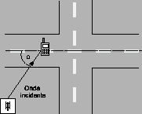

Siguiente: Caso LOS
Subir: Modelo de Walfisch-Ikegami
Anterior: Modelo de Walfisch-Bertoni
Índice General
Modelo COST231 Walfisch-Ikegami
Durante el proyecto del COST231, un subgrupo propuso la
combinación del modelo Walfisch-Bertoni con el modelo Ikegami,
para mejorar la estimación de la pérdida de propagación al incluir
más datos. Se incluyeron los siguientes cuatro factores:
- altura promedio de edificios (
 )
)
- ancho de calles (
 )
)
- separación de edificios (
 )
)
- orientación de las calles respecto al camino de LOS (
 )
)
Figura 5.4:
Definición del ángulo de orientación de la calle
según el modelo COST231 Walfisch-Ikegami
|

|
El modelo hace la distinción entre los caminos con línea de vista
(LOS) y aquéllos sin línea de vista (NLOS) como se describe a
continuación.
Subsecciones
SAPO